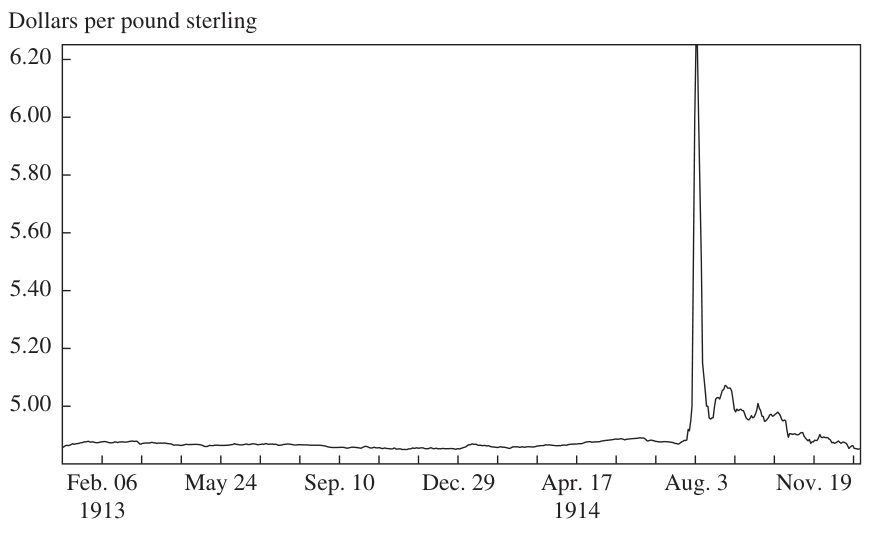

Earning from History? Financial Markets and the Approach of World Wars — Part 2/7: 1914: A Bolt from the Blue
The world of 2008 is not the world of 1914, but in economic terms it may have more in common with that time than with the world in any intervening year. Then, as now, the world economy was highly integrated, with international flows of labor, goods, and capital reaching levels in relation to total world output not subsequently matched until the 1990s. Yet this “globalized” world was, like today’s, afflicted with various forms of political fragmentation. The rise of radical anticapitalist ideologies and terrorist movements (al Qaeda today, Bolsheviks and anarchists then) posed a threat to the established political order in key emerging markets (the Middle East today, Russia then). The existence of rogue regimes willing to sponsor terrorism (Iran today, Serbia then) increased the chances that assassins and bombers would hit their targets. Meanwhile the possibility existed that the great powers or empires might come into conflict over minor states (Taiwan today, Belgium then). And the Anglophone empire that had underwritten the global economic order (the United States today, the United Kingdom then) was finding itself increasingly overstretched.
Of course, there are differences between the two ages of globalization. Today, thanks to technological advances in communications, free trade prevails in many services as well as in commodities and manufactures. Much mass migration today is to Europe, not from it. Capital movements today are not wholly free, so long as China prevents its citizens from investing abroad. The international monetary system today is made up of fiat currencies, with central bankers using as much discretion as rules to determine policy. In marked contrast to the era of the gold standard, some exchange rates float freely, while others are pegged more or less firmly to an anchor that is no longer made of metal. Deflation in recent years has affected the price of manufactures (textiles and electronic goods, for example), whereas from the mid-1870s until the mid-1890s it was agricultural prices that were depressed. Today’s American empire is a colossal debtor, not “the world’s banker” like the British Empire before it. Financial innovations—securitization, derivatives—have allowed much higher levels of leverage, not least for ordinary households, than was thought possible a century ago, when consumer debt was minimal and banks maintained much higher capital ratios. Asia is on the rise today, whereas a hundred years ago only Japan had eluded direct or indirect European domination, and growth in India and China was, respectively, negligible and negative. Democratic institutions are more widely spread in our time: the
NIALL FERGUSON 443 empires of 1914 have nearly all declined and fallen, replaced by a multitude of great and small nation states.
Nevertheless, these differences do not entirely spoil the analogy. In 1914 as today, substantial pools of private capital operated with minimal regulation. In 1899, for example, the banks owned and managed by the Rothschild family had a combined capital of £41 million, which exceeded that of the five biggest German joint-stock banks put together.24 Such firms essentially existed to manage the vast wealth of the partners and their relatives. The three decades before 1914 were golden years for this financial elite. Inflation expectations were securely anchored. Europe’s central banks had nearly all committed themselves to the gold standard by 1908, which meant that nearly all had to target their gold reserves, raising rates (or otherwise intervening) if they experienced a specie outflow.25 Longterm interest rates were low. Although the yield on the benchmark British consol rose by over 100 basis points between 1897 and 1914, that was from an all-time nadir of 2.25 percent. What we would now call “emerging market” spreads narrowed dramatically, despite major episodes of debt default in the 1870s and 1890s. With the exception of those of Greece and Nicaragua, none of the sovereign or colonial bonds trading in London in 1913 yielded more than 200 basis points above consols, and most paid considerably less.26 The yields on the bonds of the other great powers, which accounted for about half the foreign sovereign debt quoted in London, declined steadily after 1880, suggesting that political risk premiums were also falling. Before 1880, Austrian, French, German, and Russian bonds had tended to fluctuate quite violently in response to political news; but the various crises of the decade before 1914—such as those over Morocco and the Balkans—caused scarcely a tremor in the London bond market. Although the major stock markets did not perform spectacularly— Britain’s essentially flat-lined after the 1895–1900 “Kaffir” (gold mine) bubble burst, and the Dow Jones failed to recover its January 1906 high in the aftermath of the 1907 panic—the volatility of returns trended downward. There is at least some evidence to connect these trends with a secular upward shift in liquidity, due partly to increased gold production and, more importantly, to financial innovation, as joint-stock banks expanded
24. See the appendix to Ferguson (1998). 25. Such a targeting regime might have been expected to produce high volatility in short-term interest rates. However, it is clear that not all banks played strictly by the rules of the game. Even the Bank of England made significantly fewer changes to its discount rate with every passing decade from the 1870s, when the Bank rate was altered 113 times, to the 1900s, when it changed just 49 times. 26. Ferguson and Schularick (2006).
444 Brookings Papers on Economic Activity, Spring 2008 their balance sheets relative to their reserves, and savings banks successfully mobilized the assets of middle- and lower-class investors.27
All these benign economic trends encouraged optimism. To many businessmen—from Ivan Bloch in tsarist Russia to Andrew Carnegie in the United States—it was self-evident that a major war would be catastrophic for the capitalist system. In 1898 Bloch published a massive six-volume work titled The Future of War, which argued that because of recent technological advances in the destructiveness of weaponry, war essentially had no future. Any attempt to wage it on a large scale would end in “the bankruptcy of nations.”28 In 1910—the same year that Carnegie established his Endowment for International Peace—the left-leaning British journalist Norman Angell published The Great Illusion, in which he argued that a war between the great powers had become an economic impossibility precisely because of “the delicate interdependence of international finance.”29 In the spring of 1914 an international commission published its report into the “outrages” committed during the Balkan wars of 1912–13. Despite the evidence he and his colleagues confronted of wars waged à l’outrance between entire populations, the commission’s chairman noted in his introduction to the report that the great powers of Europe (unlike the petty Balkan states) had “discovered the obvious truth that the richest country has the most to lose by war, and each country wishes for peace above all things.”30 One of the British members of the commission, Henry Noel Brailsford—a staunch supporter of the Independent Labour Party and author of a fierce critique of the arms industry (The War of Steel and Gold)—declared:
In Europe the epoch of conquest is over and save in the Balkans and perhaps on the fringes of the Austrian and Russian empires, it is as certain as anything in politics that the frontiers of our national states are finally drawn. My own belief is that there will be no more wars among the six great powers.31
Yet within just a few weeks of the assassination of the Austro-Hungarian Archduke Franz Ferdinand by the Bosnian Serb Gavrilo Princip—which happened on June 28, 1914—all this optimism was confounded. The first age of globalization came to an end with a bang,32 closely followed
27. For a full discussion of this point, see Ferguson (2006a). 28. Bloch (1899, p. xvii). 29. Angell (1910, p. 49). 30. Quoted in Sheehan (2008, p. 56). 31. Quoted in Sheehan (2008, p. 56). 32. Ferguson (2005b).
NIALL FERGUSON 445 by the sucking sound of liquidity draining with astounding speed out of the global financial system. On July 22 the Times of London made the first English-language allusion that I have been able to trace to the possibility that the crisis in the Balkans precipitated by the archduke’s assassination might have negative financial consequences. The report appeared on page 19 and read as follows:
STOCK EXCHANGE DEPRESSED BY FOREIGN POLITICAL NEWS
LATE RALLY IN AMERICANS Stock markets at the opening were entirely overshadowed by the news that the relations between Austria-Hungary and Servia [sic] are daily growing more strained. . . . Owing to the increasing gravity of the situation in the Near East the attention of members [of the Stock Exchange] has for the moment appeared to be diverted from the Ulster crisis [caused by Protestant opponents of Irish Home Rule] . . . there being a general disinclination to increase commitments in view of the obscurity of the outlook both at home and abroad.33
Considering the vast body of literature that has been written about the origins of the First World War—tracing these back as far as the 1870s, or at least the 1900s—it is remarkable that from the vantage point of contemporary financial journalism the war had virtually no origins at all. Other evidence strongly supports the proposition that to investors, who were among the best-informed people in the world at that time, the war came as a complete surprise. As late as August 1, the headline on the front page of the New York Times was the wildly optimistic “CZAR, KAISER AND KING MAY YET ARRANGE PEACE.”34 But that same day saw the following stark headline on the lead financial page of the London Times:
STOCK EXCHANGE CLOSED UNTIL FURTHER NOTICE
SETTLEMENTS POSTPONED35
As the Economist observed in its leading article:
On Sunday [July 26] . . . Europe was suddenly confronted with the fear of a great war on a scale of unprecedented magnitude. . . . The world . . . seems to be returning to a basis of cash and barter . . . and unless a proclamation
33. The Times (London), July 22, 1914, p. 19. 34. Austria had declared war on Serbia on July 28. On July 31 Russia had begun general mobilization. Germany declared war on Russia on August 1 and on France on August 3. Britain entered the war on the 4th.
35. The Times (London), August 1, 1914, p. 13.
446 Brookings Papers on Economic Activity, Spring 2008 of neutrality relieves the strain worse may ensue. . . . The City [of London] has seen in a flash the meaning of war.36
Table 1 shows how little the crisis was anticipated. Apart from an upward movement in Austrian bond yields, there were no significant shifts on either the bond market, the money market, or the foreign exchange markets until the final week before war broke out.
The earliest symptom of the crisis was a rise in shipping insurance premiums in the wake of the Austrian ultimatum.37 Bond and stock prices began to slip as prudent investors sought to increase the liquidity of their positions. Exchange rates shifted dramatically as a result of efforts by cross-border creditors to repatriate their money: sterling and the franc surged, while the ruble and the dollar slumped.38 By July 30 panic reigned.39 The first firms to come under liquidity pressure in London were the jobbers on the Stock Exchange, who relied heavily on borrowed money to finance their holdings of equities. As sell orders flooded in, the value of their stocks plunged below the value of their debts, forcing a number into bankruptcy. Also under pressure were the commercial bill brokers in London, many of whom were owed substantial sums by continental counterparties that were now unable or unwilling to remit funds. Their difficulties in turn affected the acceptance houses (the elite merchant banks), who were first in line if the foreigners defaulted, since they had “accepted” the bills. If the acceptance houses went bust, the bill brokers would go down with them, and possibly also the larger joint-stock banks, which lent millions every day on call to the discount market. The joint-stock banks’ decision to call in loans deepened what we would now call the credit crunch.40 As everyone scrambled to sell assets, stock prices fell, compromising brokers and others who had borrowed using shares as collateral. Domestic customers began to fear a banking crisis. Queues formed as people sought to exchange banknotes for gold coins at the Bank of England.41
The effective suspension of London’s role as the hub of international credit helped spread the crisis from Europe to the rest of the world.
Perhaps the most remarkable feature of the crisis of 1914 was the closure of the world’s major stock markets for periods of up to five months. The Vienna market was the first to close, on July 27. By July 30 all the
36. The Economist, August 1, 1914, p. 218. Emphasis added. 37. This part of the discussion draws extensively on Ferguson (2008). 38. Sprague (1915, pp. 505ff). 39. Brown (1988, pp. 1–34). 40. Keynes (1914). 41. Morgan (1952, pp. 3–11).
2.5% 3% 5% of Austria, 3% of St. New
Date consols rentes 1822 4% 1891 Paris Petersburg Vienna Berlin York
Three-month-forward exchange rates (currency units per pound sterling, January 7 = 100)
commercial
Interest on bills, first-
(percent a year)
class
U.K., France, Russia, Germany,
Government bond yields (percent a year)
Table 1. Selected Financial Indicators, June–July 1914
June 5 3.38 3.49 4.13 4.71 3.90 211⁄16 100.01 101.23 100.10 101.21 100.41 June 12 3.39 3.49 4.13 4.82 3.90 21⁄2 100.05 101.23 100.10 101.18 100.49 June 19 3.34 3.55 4.13 4.82 3.90 25⁄16 100.01 101.23 100.10 101.14 100.54 June 26 3.33 3.59 4.13 4.71 3.90 23⁄8 100.03 101.09 100.23 101.09 100.39 July 3 3.31 3.58 4.13 4.65 3.90 17⁄8 99.89 100.90 100.23 101.15 100.72 July 10 3.30 3.62 4.13 4.65 3.92 2 100.03 100.97 100.15 101.21 100.21 July 17 3.29 3.62 4.13 4.94 3.92 21⁄8 99.95 100.40 100.15 101.16 100.21 July 24 3.33 3.69 4.13 5.00 3.95 29⁄16 100.01 101.47 100.42 101.23 100.21 July 31 3.55 3.64 4.24 5.13 4.11 5 98.5 n.a. n.a. n.a. n.a.
Source: The Economist.
448 Brookings Papers on Economic Activity, Spring 2008 continental European exchanges had shut their doors. The next day London and New York felt compelled to do the same. Although a belated settlement day went ahead smoothly on November 18, the London Stock Exchange did not reopen until January 4, 1915. Nothing like this had happened since its founding in 1773.42 The New York market reopened for limited trading (bonds for cash only) on November 28, and something like normal service resumed the following month, but wholly unrestricted trading did not resume until April 1, 1915.43 Nor were stock exchanges the only markets to close in the crisis. Most U.S. commodity markets had to suspend trading, as did most European foreign exchange markets. The London Royal Exchange, for example, remained closed until September 17.44 It seems likely that had the markets not closed, the collapse in prices would have been as extreme as in 1929, if not worse.
To be sure, the existence of the gold standard tended to exacerbate the liquidity crisis in a way very different from what has been seen since August 2007. Some central banks (notably the Bank of England) actually raised their discount rates in the initial phase of the crisis, in a vain attempt to deter foreigners from repatriating their capital and thereby draining gold reserves. The adequacy of gold reserves in the event of an emergency had been hotly debated before the war; indeed, these debates are almost the only evidence that the financial world had given any thought whatever to the trouble that might lie ahead.45 However, the gold standard was no more rigidly binding than today’s informal dollar pegs in Asia, the Middle East, and Latin America; in the emergency of war, a number of countries, beginning with Russia, simply suspended the gold convertibility of their currencies. In both Britain and the United States, formal convertibility was maintained, but it could have been suspended if that had been thought necessary. (The Bank of England requested and was granted suspension of the 1844 Bank Act, which imposed a fixed relationship between the Bank’s reserves and note issue, but this was not equivalent to suspending specie payments.) In each case the crisis prompted the issue of emergency paper money by the national treasury: in Britain, £1 and 10 shilling Treasury notes, and in the United States, the emergency notes that banks were authorized to issue under the Aldrich-Vreeland Act of 1908.46 Then, as now, the authorities reacted to a liquidity crisis by printing money.
42. Morgan (1952, p. 27). See also Seabourne (1986, pp. 78, 88–89). 43. Sprague (1915, p. 532). 44. Morgan (1952, p. 19). 45. Seabourne (1986, pp. 80ff). 46. See, most recently, Silber (2007).
NIALL FERGUSON 449
Nor were these the only measures deemed necessary. In London the bank holiday of Monday, August 3, was extended until Thursday the 6th. Payments due on bills of exchange were postponed for a month by royal proclamation. A month-long moratorium on all other payments due (except wages, taxes, pensions, and the like) was rushed onto the statute books. (These moratoria were later extended until, respectively, October 19 and November 4.) On August 13 the chancellor of the exchequer gave the Bank of England a guarantee that if the Bank discounted all approved bills accepted before August 4 “without recourse against the holders,” then the Treasury would bear the cost of any loss the Bank might incur. This amounted to a government rescue of the discount houses; it opened the door for a massive expansion of the monetary base, as bills poured into the Bank to be discounted. On September 5 assistance was also extended to the acceptance houses.47 Arrangements varied from country to country, but the expedients were broadly similar and quite unprecedented in their scope: temporary closure of markets; moratoria on debts; emergency money issued by governments; bailouts for the most vulnerable institutions. In all these respects the authorities were prepared to go much further than they had previously gone in purely financial crises. As had happened during the previous “world war” (against revolutionary and then Napoleonic France more than a century before), the war of 1914 was understood to be a special kind of emergency, justifying measures that would have been inconceivable in peacetime, including (as one Conservative peer put it) “the release of the bankers . . . from all liability.”48
The closure of the stock market and the intervention of the authorities to supply liquidity almost certainly averted a catastrophic fire sale of assets. The London stock market was already down 7 percent on the year when trading was suspended—and that was before the fighting had even begun. Fragmentary data on bond transactions (conducted literally in the street during the period of stock market closure) give a sense of the losses investors had to contemplate, despite the authorities’ efforts. By the end of 1914, Russian government bonds were down 8.8 percent, British consols 9.3 percent, French rentes 13.2 percent, and Austrian government
47. The Bank agreed to advance funds to the acceptors to allow them to repay premoratorium bills on maturity and to defer repayment of the funds until one year after the end of the war (Morgan 1952, pp. 12–23). For other government measures designed to assist the nonbanking sector and exporters, see Seabourne (1986, p. 108).
48. Kynaston (1999, p. 5).
450 Brookings Papers on Economic Activity, Spring 2008 bonds 23 percent.49 In the words of Patrick Shaw-Stewart of Barings, it was “one of the most terrific things London [had] been up against since finance existed.”50 This, however, was merely the beginning. Contrary to the “short war illusion” (which was more widespread in financial than in military circles), another four years of carnage were still to come, and an even longer period of financial losses. Any investor unwise (or patriotic) enough to hang on to U.K. government bonds (whether consols or the new U.K. War Loans) would have seen the index of real returns decline by 46 percent by 1920. The index of real returns on British equities declined by 27 percent (figure 3). A better strategy in this simple contest would have been to put one’s money in gold, which not only retained its capital value during the war but appreciated significantly in sterling terms afterward: it had risen 37 percent above its 1913 level by 1920, although that was down to 12 percent by 1923.
Gold was thus a good hedge against wartime inflation, but it was not the best asset for a British investor to hold. Since the dollar remained on the gold standard during and after the war, holding dollars would have been equally good. By contrast, exposure to continental currencies would have been either bad or disastrous. Inflation in France and hyperinflation in Germany inflicted severe punishment on anyone rash enough to maintain large franc or Reichsmark balances. Those with substantial holdings of Austrian, Hungarian, Ottoman, or Russian bonds also lost heavily—even when these were gold-denominated—as the Habsburg, Ottoman, and Romanov empires fell apart under the strains and stresses of total war. The losses were especially sudden and severe in the case of Russian bonds, on which the Bolshevik regime defaulted in February 1918. By the time this happened, Russian 5 percent bonds of the 1906 vintage were trading below 45 percent of their face value. Hopes of some kind of settlement with foreign creditors lingered on throughout the 1920s, by which time the bonds were trading at around 20 percent of par. By the 1930s they were all but worthless.51 By contrast, an investor could simultaneously enjoy the benefit of the gold hedge against sterling depreciation and earn additional returns by investing in U.S. stocks. A British investor who had converted his entire portfolio into a selection of blue-chip American stocks on the eve
49. Calculated from isolated prices quoted in the Times (London) between August and December 1914. Note that the decline is not captured in the annual inflation-adjusted figures presented in figure 3.
50. Kynaston (1999, p. 5). 51. See Moore and Kaluzny (2005).
NIALL FERGUSON 451
Figure 3. Inflation-Adjusted Total Returns for U.K., U.S., and German Securities before and after the First World War

Source: Global Financial Data.
of the war would have seen the index of real returns rise by, on average, 47 percent between 1914 and 1923. Yet there is little evidence to suggest that many London-based investors adopted this strategy. Net foreign assets in the United States had declined by $234 million between 1913 and 1914.52 The onset of the diplomatic crisis of July 1914 saw capital flowing in the opposite direction as liquidity-constrained Europeans liquidated their American portfolios and repatriated the funds to London. This can be seen in the sharp depreciation of the dollar that began on July 23 (£1 = $4.88) and reached its peak on August 4 (£1 = $6.25; figure 4).
The First World War not only played havoc with the prices of securities and currencies. It also caused huge volatility in commodity prices. Most food prices had doubled or tripled by 1919–20, and the price of sugar soared to nearly six times its prewar price in 1920, the year after the war ended. The tripling in the price of aluminum, by contrast, happened during
52. Carter and others (2006, table Ee1–21).
452 Brookings Papers on Economic Activity, Spring 2008
Figure 4. U.K.-U.S. Exchange Rate, 1913–14

Source: Global Financial Data.
the war and was reversed before the war’s end as a result of government intervention. Gold, because the United States genuinely maintained convertibility throughout the war, did not vary in price in New York as it did in London. Figure 5 makes clear that, as a hedge against inflation in the United States, gold was not the optimal commodity to buy in 1914. Again, however, there was no detectable prewar move to invest in strategic commodities as a hedge against war risk.
The stakes for investors had thus been very high in the summer of 1914, although few of them seem to have known it before the storm broke. The impact of the war was very far from uniform on the various asset classes open to a typical capitalist of the prewar years. John Maynard Keynes’s archetypal prewar rentier, sipping his tea and playing the global markets from the comfort of his London boudoir, had little suspected what havoc would be wrought by “the projects and politics of militarism and imperialism, of racial and cultural rivalries, of monopolies, restrictions, and exclusion.”53 These forces were indeed the serpent in the paradise of pre-1914 globalization. But the serpent’s bite was more fatal to some portfolios than to others.
53. Keynes (1919, ch. 2).
NIALL FERGUSON 453
Figure 5. Selected Commodity Prices before and after the First World Wara

Source: Global Financial Data. a. Figure uses U.S. data, which are more readily available than U.K. data.